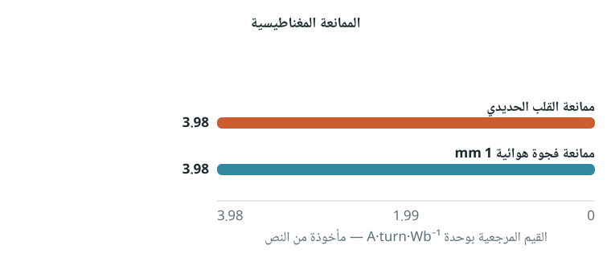

الممانعة المغناطيسية
Magnetic reluctance
الممانعة المغناطيسية تقيس مقاومة مسار مغناطيسي لمرور التدفق: R = l/(μ·A). تقابل المقاومة الكهربائية في الدوائر المغناطيسية، وتُستعمل في تصميم المحولات والمحركات والمغناطيسات الكهربائية.
في الدائرة المغناطيسية، يولّد التيار في الملف قوة دافعة مغناطيسية N·I، فيسري تدفق مغناطيسي Φ في القلب. والممانعة هي نسبة القوة الدافعة إلى التدفق: R = N·I/Φ = l/(μ·A)، حيث l طول المسار وA مقطعه وμ نفاذية المادة. وهي تقابل المقاومة في الدوائر الكهربائية. مثال: قلب حديدي طوله 0.500 m ومقطعه 0.002 00 m² ونفاذيته النسبية 5000: μ = 5000×4π×10⁻⁷ = 6.283×10⁻³ H/m، فيكون R = 0.500/(6.283×10⁻³×0.002 00) = 0.500/1.257×10⁻⁵ = 3.98×10⁴ A·turn/Wb.
كيف تعمل الظاهرة؟
المجال المغناطيسي ينشأ من التيار في الملف، ويسري في المسار الأقل ممانعة. وفي المواد الحديدية تصطف العزوم المغناطيسية للذرات مع المجال فتضخّمه، فترتفع النفاذية إلى آلاف الأمثال. وفي الهواء لا يوجد هذا الاصطفاف، فالنفاذية قريبة من نفاذية الفراغ. ولهذا تُصنع القلوب من الحديد لتوجيه التدفق، وتُقاوم الفجوات الهوائية بمسارات قصيرة. والممانعة تجمع طول المسار ومقطعه ونفاذيته في رقم واحد.
العلاقة بالأرقام
R = l/(μ·A)، وΦ = N·I/R، وμ = μ_r·μ₀ حيث μ₀ = 4π×10⁻⁷ H/m. مثال: l = 0.500 m، A = 0.002 00 m²، μ_r = 5000 → μ = 6.283×10⁻³ H/m، R = 0.500/(1.257×10⁻⁵) = 3.98×10⁴ A·turn/Wb. ولو كان الملف 500 لفة وتيار 2.00 A: Φ = 500×2.00/3.98×10⁴ = 0.0251 Wb.
مفاهيم متقاربة
يُفرَّق بين الممانعة والمقاومة: الأولى للتدفق المغناطيسي والثانية للتيار الكهربائي، والعلاقة بينهما تشابه رياضي لا تماثل فيزيائي. ويُفرَّق بين الممانعة والنفاذية: النفاذية كثافة خاصية، والممانعة حاصل قسمة على هندسة. ويُفرَّد بين الممانعة في المسار المغناطيسي والمفاعلة في الدائرة الكهربائية، حيث الثانية تعتمد على التردد. وأخيراً يُفرَّق بين الممانعة الخطية وغير الخطية، حيث تتغير النفاذية مع شدة المجال في الحديد.
حدود التطبيق
العلاقة خطية فقط إذا كانت النفاذية ثابتة، وفي الحديد تتغير مع شدة المجال فتصبح الدائرة غير خطية. ولا تصف التشبع المغناطيسي، حيث تتوقف النفاذية عن الزيادة. ولا تصف التسرب المغناطيسي بين المسارات المتجاورة. ولا تُستعمل في حساب الفقد الحديدي، الذي يعتمد على التردد والتيار الدوامي.

| الكمية | القيمة | المصدر |
|---|---|---|
| ممانعة القلب الحديدي | 3.98×10⁴ A·turn·Wb⁻¹ | [1] |
| ممانعة فجوة هوائية 1 mm | 3.98×10⁵ A·turn·Wb⁻¹ | [1] |
المصادر
- 1 CODATA Value: elementary charge — NIST — CODATA 2022 recommended values (2024). physics.nist.gov/cgi-bin/cuu/Value?e · اطُّلع عليه 2026-11-22
- 2 CODATA Value: Planck constant — NIST — CODATA 2022 recommended values (2024). physics.nist.gov/cgi-bin/cuu/Value?h · اطُّلع عليه 2026-11-22
- 3 CODATA Value: speed of light in vacuum — NIST — CODATA 2022 recommended values (2024). physics.nist.gov/cgi-bin/cuu/Value?c · اطُّلع عليه 2026-11-22
استشهد بهذا المصطلح
الصيغتان مبنيتان من بيانات الصفحة نفسها: العنوان والتاريخ ورابط النسخة المنشورة.
الممانعة المغناطيسية — Magnetic reluctance. (2026). ديوان المعرفة — انفراد. https://infiradev.com/diwan/terms/term-magnetic-reluctance.html
@misc{term-magnetic-reluctance2026,
title = {الممانعة المغناطيسية},
titleaddon = {Magnetic reluctance},
howpublished = {{ديوان المعرفة — انفراد} — مرجع علمي عربي},
year = {2026},
url = {https://infiradev.com/diwan/terms/term-magnetic-reluctance.html},
urldate = {2026-11-26},
note = {مراجعة علمية: hermes (مراجعة معتمدة 2026-11-26)}
}
راجعه: hermes (مراجعة معتمدة 2026-11-26) · 2026-11-26 · آخر تحديث 2026-11-22